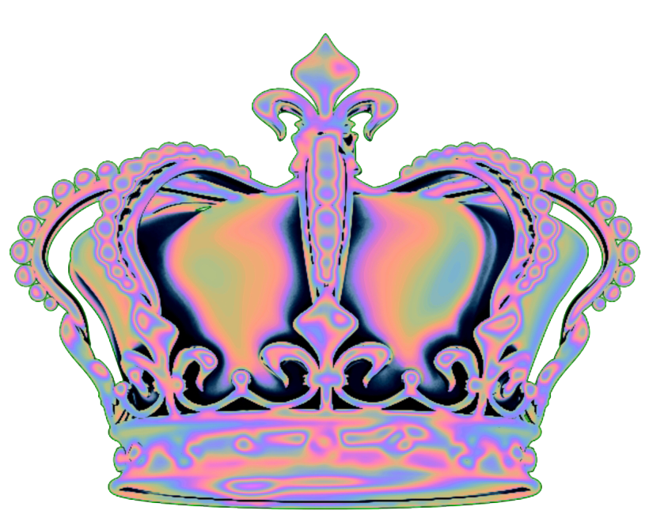

AESOP'S FABLES
AESOP'S
FABLES amélioration
THE PROUD FROG AND THE OX.
An Ox, grazing in a meadow, chanced to set his foot among a parcel of
young Frogs, and trod one of them to death. The rest informed their
mother, when she came home, what had happened; telling her, that the
beast which did it, was the hugest creature that they ever saw in their
lives. What, was it so big? says the old Frog, swelling and blowing up
her speckled belly to a great degree. Oh! bigger by a vast deal, say
they: and so big? says she, straining herself yet more. Indeed, say
they, if you were to burst yourself, you would never be so big. She
strove yet again, and burst herself indeed.
THE LEOPARD AND THE FOX.
The Leopard, one day, took it into his head to value himself upon the
great variety and beauty of his spots, and truly he saw no reason why
even the Lion should take place of him, since he could not shew so
beautiful a skin. As for the rest of the wild beasts of the forest, he
treated them all without distinction in the most haughty and disdainful
manner. But the Fox being among them, went up to him with a great deal
of spirit and resolution, and told him that he was mistaken in the
value he was pleased to set upon himself, since people of judgment were
not used to form their opinion of merit from an outside appearance, but
by considering the good qualities and endowments with which the mind
was stored within.
THE GOAT, THE KID, AND THE WOLF.
The Goat going abroad to feed, shut up her young Kid at home, charging
him to bolt the door fast, and open it to nobody till she herself
should return. The Wolf who lay lurking hard by, heard the charge
given, and soon after came and knocked at the door, counterfeiting the
voice of the Goat, and desired to be admitted. The Kid looking out at
the window, and finding the cheat, bade him go about his business, for,
however he might imitate a Goat’s voice, yet he appeared too much like
a Wolf to be trusted.